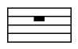
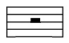
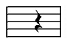
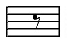
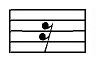
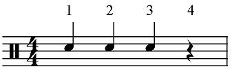

By now you should understand that the notes you see in music, show you which drum to play and how long to play it for. Rests, on the other hand, tell you what NOT to play. Rests indicate silence. You don’t have to do anything when you see a rest except to keep counting off the beats.
Each note has a corresponding rest that goes with it. A semibreve note lasts for four beats. A semibreve rest also lasts for four beats. When you come across a semibreve note, you know that you should play the note for four counts. When you see a semibreve rest, you shouldn’t play anything; you just count off four beats.
Semibreve Rest
Lasts four beats
Minim Rest
Lasts two beats
Crotchet Rest
Lasts one beat
Quaver Rest
Lasts half a beat
Semiquaver Rest
Lasts a quarter of a beat
Rests have the same value as their corresponding notes. This means that we can count rests the same way we would normally count their respective notes.
Example:
Here is bar in 4/4 time with some notes written in. On the first three beats are crotchets. The last beat however is a crotchet rest. Since we count crotchet rests the same way as crotchet notes, this bar will be counted “One-Two-Three-Four”.
Play when you count “One-Two-Three” but DO NOT play when “Four” is counted. It is a rest!